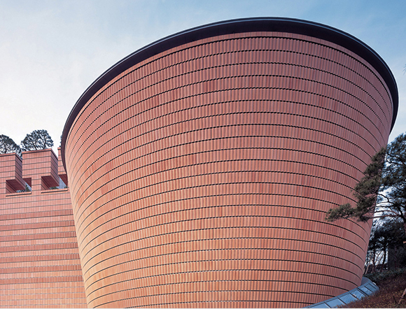
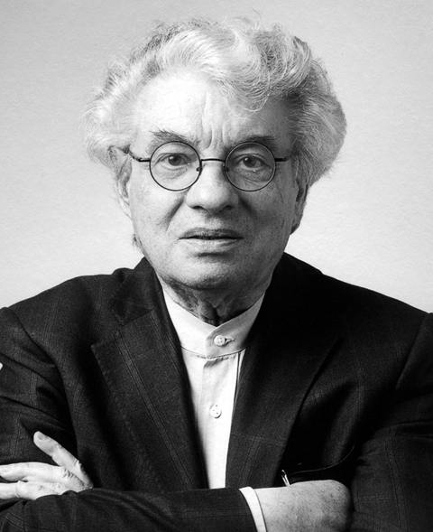

대지면적 - 2,333㎡
연면적 - 9,850㎡
규모 - 지상 4층, 지하 3층
전통의 뿌리와 힘을 상징한 고고한 기하학
견고한 형태는 전통과 고미술품의 불변하는 가치를
수호하는 요새 또는 성(城)을 연상시킵니다.
특히 흙과 불로 만들어진 외벽의 테라코타 벽돌은
세계적으로 인정받아 온 한국의 도자기를 상징합니다.
이러한 직설적 이고 기하학적인 형태와 고고한 느낌의
외벽은 전통의 뿌리와 힘을 느끼게 하면서 삼성미술관
Leeum의 전체적 인상을 강렬하게 만들어 줍니다.
대지면적 - 2,333㎡
연면적 - 9,850㎡
규모 - 지상 4층, 지하 3층
“Someone will pass
through the city and
be drawn into Leeum
by a mysterious figure.”

건축가
마리오 보타
Mario Botta